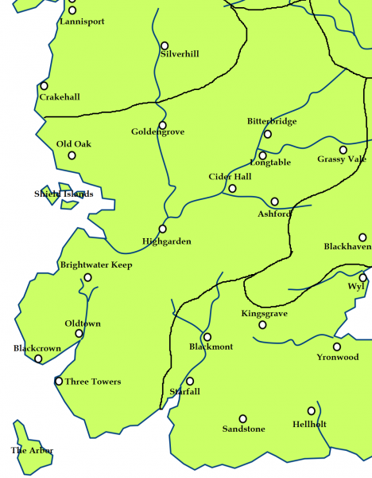

Oldtown
Oldtown is one of the largest cities in Westeros and is by far the oldest, built by the First Men before the Andal Invasion. The city is located in the south-west of Westeros, at the mouth of the river Honeywine where it opens onto Whispering Sound and the Sunset Sea beyond. It is the western terminus of the Roseroad from Highgarden and King’s Landing.
Oldtown survived the Andal invasion by welcoming the Andals, not resisting them. Aegon I’s reign is dated from his entrance into the city of Oldtown and his acknowledgment as King by the High Septon. During the Great Spring Sickness, Oldtown suffered badly, second only to King’s Landing.
The city is primarily known as the location of the Citadel, home of the order of Maesters who serve as councillors, doctors, scientists, and postmasters for the Seven Kingdoms.
Oldtown is also one of the most important ports of the Seven Kingdoms. Trading ships from all over Westeros, as well as the Summer Islands, the Free Cities and other places across the Narrow Sea, constantly crowd into its harbors.
The largest structure in the city, and also the tallest structure in Westeros, is the Hightower, a massive lighthouse which extends some 800 feet into the sky and is topped by a huge beacon which can be seen for many miles out to sea.
The city is policed by the City Watch of Oldtown, commanded by Ser Moryn Tyrell, an uncle of Lord Mace. Oldtown is ruled from the Hightower by House Hightower. Originally kings in their own right, they later swore fealty to House Gardener, and later became vassals of the Tyrells after the War of Conquest. The Hightowers are known for their loyalty and being stalwart. The current ruler of the city is Lord Leyton Hightower.
Map on Next page.
